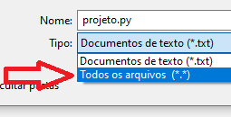

Material de apoio para a disciplina Linguagem de Programação da UACSA/UFRPE
Produzido pelo prof. João Pimentel
Comece logo os projetos. Se deixar para fazer os projetos (qualquer projeto, não só os das disciplinas) perto do prazo de entrega, não haverá tempo para melhorar o projeto.
Em qualquer projeto, seja da universidade ou no mercado de trabalho, é importante começar cedo, para se fazer uma primeira versão completa do projeto, e depois ainda ter um pouco de tempo para verificar se realmente está tudo correto e melhorar o projeto.
DICA BÔNUS: entregue o projeto com antecedência, para não ser prejudicado(a) caso o SIGAA dê problema.
Equipe
O projeto pode ser feito individualmente, em dupla, ou em trio.
Entrega
Apenas um(a) representante da equipe irá entregar o arquivo do projeto, pelo SIGAA
Como se preparar para o projeto?
Como salvar o arquivo
Quando terminar de fazer o código no repl.it, abra o bloco de notas, copie o código para ele, e salve com o nome projeto.py, escolhendo o Tipo "Todos os arquivos", conforme imagem abaixo. É esse arquivo que será entregue pelo SIGAA.
OBS: não, não comprimir ou compactar o arquivo (ex: .zip, .tar, .7z) - não faça isso
Como tirar dúvidas?
Faça as perguntas pelo grupo do WhatsApp mas não envie o seu código (não), para evitar o risco de alguém copiar o seu código e acabar lhe prejudicando.
Maiores informações no vídeo a seguir ---->
Vídeo 1 (22min):